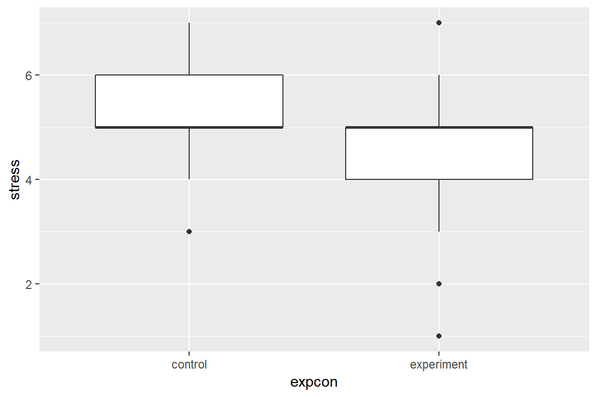
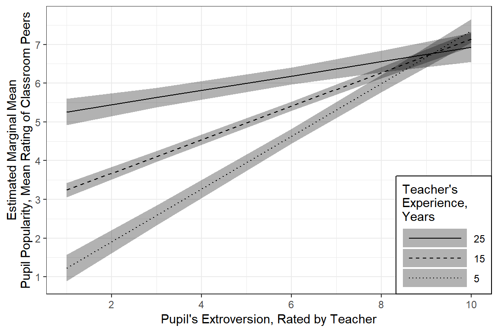
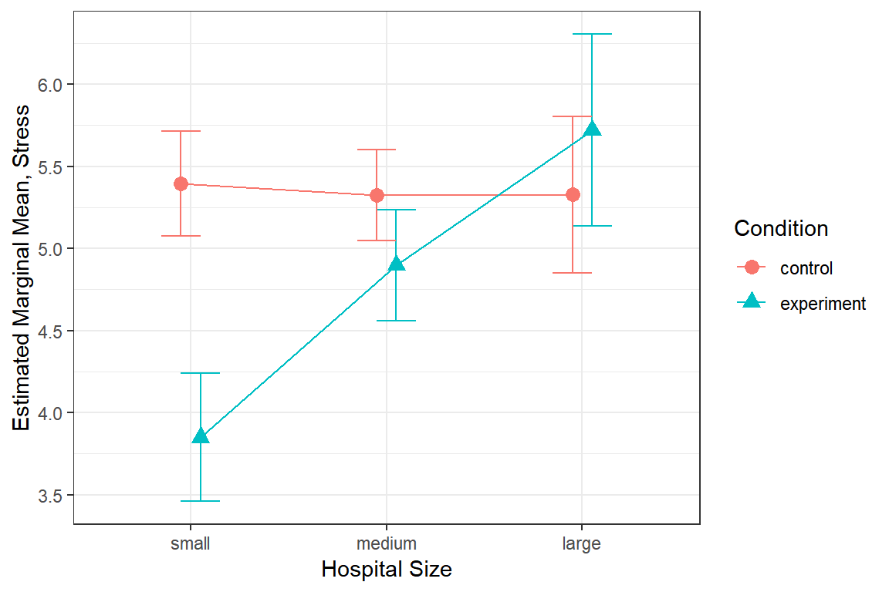

3 Example - Nurse’s Stress Intervention
library(tidyverse)
library(haven) # read in SPSS dataset
library(furniture) # nice table1() descriptives
library(stargazer) # display nice tables: summary & regression
library(texreg) # Convert Regression Output to LaTeX or HTML Tables
library(RColorBrewer) # nice color palettes for plots
library(gridExtra) # place ggplots together as one plot
library(psych) # contains some useful functions, like headTail
library(car) # Companion to Applied Regression
library(nlme) # non-linear mixed-effects models
library(lme4) # Linear, generalized linear, & nonlinear mixed models
library(lmerTest) # Tests on lmer objects
library(HLMdiag) # Diagnostic Tools for for nlme & lmer4
library(sjstats) # ICC calculations
library(optimx) # Different optimizers to solve mlm's
library(effsize) # effect size computations
library(lsr) # companion to learning stats with R3.1 Background
The text “Multilevel Analysis: Techniques and Applications, Third Edition” (Hox, Moerbeek, and Van de Schoot 2017) has a companion website which includes links to all the data files used throughout the book (housed on the book’s GitHub repository).
The following example is used through out Hox, Moerbeek, and Van de Schoot (2017)’s chapater 2.
From Appendix E:
The nurses.sav file contains three-level simulated data from a hypothetical study on stress in hospitals. The data are from nurses working in wards nested within hospitals. It is a cluster-randomized experiment. In each of 25 hospitals, four wards are selected and randomly assigned to an experimental and a control condition. In the experimental condition, a training program is offered to all nurses to cope with job-related stress. After the program is completed, a sample of about 10 nurses from each ward is given a test that measures job-related stress. ADditional variables are: nurse age (years), nurse experience (years), nurse gender (0=male, 1 = female), type of ward (0=general care, 1=special care), and hospital size (0=small, 1 = medium, 2=large). The data have been generated to illustrate three-level analysis with a random slope for the effect of
ExpCon.
Here the data is read in and the SPSS variables with labels are converted to \(R\) factors.
data_raw <- haven::read_sav("https://github.com/MultiLevelAnalysis/Datasets-third-edition-Multilevel-book/raw/master/chapter%202/Nurses/SPSS/Nurses.sav") %>%
haven::as_factor() # retain the labels from SPSS --> factor
tibble::glimpse(data_raw) Observations: 1,000
Variables: 20
$ hospital <dbl> 1, 1, 1, 1, 1, 1, 1, 1, 1, 1, 1, 1, 1, 1, 1, 1, 1, 1...
$ ward <dbl> 1, 1, 1, 1, 1, 1, 1, 1, 1, 2, 2, 2, 2, 2, 2, 2, 2, 2...
$ wardid <dbl> 11, 11, 11, 11, 11, 11, 11, 11, 11, 12, 12, 12, 12, ...
$ nurse <dbl> 1, 2, 3, 4, 5, 6, 7, 8, 9, 10, 11, 12, 13, 14, 15, 1...
$ age <fct> 36, 45, 32, 57, 46, 60, 23, 32, 60, 45, 57, 47, 32, ...
$ gender <dbl> 0, 0, 0, 1, 1, 1, 1, 1, 0, 0, 1, 0, 1, 1, 1, 1, 0, 1...
$ experien <dbl> 11, 20, 7, 25, 22, 22, 13, 13, 17, 21, 24, 24, 14, 1...
$ stress <dbl> 7, 7, 7, 6, 6, 6, 6, 7, 7, 6, 6, 6, 6, 6, 6, 5, 5, 6...
$ wardtype <fct> general care, general care, general care, general ca...
$ hospsize <fct> large, large, large, large, large, large, large, lar...
$ expcon <fct> experiment, experiment, experiment, experiment, expe...
$ Zage <dbl> -0.58173364, 0.16567575, -0.91391558, 1.16222159, 0....
$ Zgender <dbl> -1.664575, -1.664575, -1.664575, 0.600153, 0.600153,...
$ Zexperien <dbl> -1.00244836, 0.48707372, -1.66445818, 1.31458599, 0....
$ Zstress <dbl> 2.06532850, 2.06532850, 2.06532850, 1.04440487, 1.04...
$ Zwardtype <dbl> -1.0015009, -1.0015009, -1.0015009, -1.0015009, -1.0...
$ Zhospsize <dbl> 1.777279, 1.777279, 1.777279, 1.777279, 1.777279, 1....
$ Zexpcon <dbl> 0.9915356, 0.9915356, 0.9915356, 0.9915356, 0.991535...
$ Cexpcon <dbl> 0.5, 0.5, 0.5, 0.5, 0.5, 0.5, 0.5, 0.5, 0.5, 0.5, 0....
$ Chospsize <dbl> 1, 1, 1, 1, 1, 1, 1, 1, 1, 1, 1, 1, 1, 1, 1, 1, 1, 1...3.1.1 Unique Identifiers
All standardized (starts with “Z”) and mean centered (starts with “C”) variables will be remove so that their creation may be shown later. A new indicator varible for nurses with be created by combining the hospital, ward, and nurse indicators. Having a unique, distinct identifier variable for each of the lowest (Level 1) units is imparative for multilevel anlayses.
data_nurse <- data_raw %>%
dplyr::mutate(genderF = factor(gender, labels = c("Male", "Female"))) %>% # apply factor labels
dplyr::mutate(id = paste(hospital, ward, nurse,
sep = "_") %>% # cunique id for each student
factor()) %>% # declare id is a factor
dplyr::mutate_at(vars(hospital, ward,
wardid, nurse), factor) %>% # declare to be factors
dplyr::mutate(age = age %>% as.character %>% as.numeric) %>% # declare to be numeric
dplyr::select(id, wardid, nurse, ward, hospital,
age, gender, genderF, experien,
wardtype, hospsize,
expcon, stress) # reduce variables included
tibble::glimpse(data_nurse)Observations: 1,000
Variables: 13
$ id <fct> 1_1_1, 1_1_2, 1_1_3, 1_1_4, 1_1_5, 1_1_6, 1_1_7, 1_1_...
$ wardid <fct> 11, 11, 11, 11, 11, 11, 11, 11, 11, 12, 12, 12, 12, 1...
$ nurse <fct> 1, 2, 3, 4, 5, 6, 7, 8, 9, 10, 11, 12, 13, 14, 15, 16...
$ ward <fct> 1, 1, 1, 1, 1, 1, 1, 1, 1, 2, 2, 2, 2, 2, 2, 2, 2, 2,...
$ hospital <fct> 1, 1, 1, 1, 1, 1, 1, 1, 1, 1, 1, 1, 1, 1, 1, 1, 1, 1,...
$ age <dbl> 36, 45, 32, 57, 46, 60, 23, 32, 60, 45, 57, 47, 32, 4...
$ gender <dbl> 0, 0, 0, 1, 1, 1, 1, 1, 0, 0, 1, 0, 1, 1, 1, 1, 0, 1,...
$ genderF <fct> Male, Male, Male, Female, Female, Female, Female, Fem...
$ experien <dbl> 11, 20, 7, 25, 22, 22, 13, 13, 17, 21, 24, 24, 14, 13...
$ wardtype <fct> general care, general care, general care, general car...
$ hospsize <fct> large, large, large, large, large, large, large, larg...
$ expcon <fct> experiment, experiment, experiment, experiment, exper...
$ stress <dbl> 7, 7, 7, 6, 6, 6, 6, 7, 7, 6, 6, 6, 6, 6, 6, 5, 5, 6,...3.2 Exploratory Data Analysis
3.2.1 Summarize Descriptive Statistics
3.2.1.1 The stargazer package
Most posters, journal articles, and reports start with a table of descriptive statistics. Since it tends to come first, this type of table is often refered to as Table 1. The stargazer() function can be used to create such a table, but only for the entire dataset (Hlavac 2018). I haven’t been able to find a way to get it to summarize subsamples and compare them in the standard format.
data_nurse %>%
data.frame() %>%
stargazer::stargazer(title = "Descriptive statistics, aggregate over entire sample",
header = FALSE,
type = "html")| Statistic | N | Mean | St. Dev. | Min | Pctl(25) | Pctl(75) | Max |
| age | 1,000 | 43.005 | 12.042 | 23 | 33 | 53 | 64 |
| gender | 1,000 | 0.735 | 0.442 | 0 | 0 | 1 | 1 |
| experien | 1,000 | 17.057 | 6.042 | 1 | 13 | 21 | 38 |
| stress | 1,000 | 4.977 | 0.980 | 1 | 4 | 6 | 7 |
3.2.1.2 The furniture package
Tyson Barrett’s furniture package includes the extremely useful function table1() which simplifies the common task of creating a stratified, comparative table of descriptive statistics. Full documentation can be accessed by executing ?furniture::table1.
data_nurse %>%
furniture::table1(age, genderF, experien, wardtype, hospsize,
splitby = ~ expcon, # var to divide sample by
test = TRUE, # test groups different?
type = "full", # give the test statistic
output = "html", # output for latex
align = c("l", "r", "r", "r"), # column alignment
caption = "Compare Intervention groups on five main variables") # title| control | experiment | Test | P-Value | |
|---|---|---|---|---|
| n = 496 | n = 504 | |||
| age | T-Test: 0.82 | 0.411 | ||
| 43.3 (11.6) | 42.7 (12.5) | |||
| genderF | Chi Square: 0.19 | 0.661 | ||
| Male | 135 (27.2%) | 130 (25.8%) | ||
| Female | 361 (72.8%) | 374 (74.2%) | ||
| experien | T-Test: 0.69 | 0.491 | ||
| 17.2 (5.8) | 16.9 (6.3) | |||
| wardtype | Chi Square: 0 | 1 | ||
| general care | 247 (49.8%) | 252 (50%) | ||
| special care | 249 (50.2%) | 252 (50%) | ||
| hospsize | Chi Square: 0.01 | 0.993 | ||
| small | 185 (37.3%) | 189 (37.5%) | ||
| medium | 237 (47.8%) | 239 (47.4%) | ||
| large | 74 (14.9%) | 76 (15.1%) |
The t-test performed by the furniture::table1() function will always assume indepent groups and that HOV is not violated. This may or may not be appropriate.
data_nurse %>%
ggplot() +
aes(x = expcon,
y = stress) +
geom_boxplot()
3.3 MLM: Intercept-only or Null Model
In a Null, intercept-only, or Empty model, no predictors are included.
3.3.0.1 Fit the Model
Fit the model to the data.
nurse_lmer_0_ml <- lme4::lmer(stress ~ 1 + (1|hospital/ward), # each hospital contains several wards
data = data_nurse,
REML = TRUE) # fit via REML (the default) for ICC calculations
nurse_lmer_0_re <- lme4::lmer(stress ~ 1 + (1|hospital/ward),
data = data_nurse,
REML = FALSE) # fit via ML for comparing FIXED effects inclusion totexreg::htmlreg(list(nurse_lmer_0_ml, nurse_lmer_0_re),
custom.model.names = c("M0: Null, ML", "M0: Null, REML"),
caption = "NULL Model: different estimation methods",
digits = 4)| M0: Null, ML | M0: Null, REML | ||
|---|---|---|---|
| (Intercept) | 5.0010*** | 5.0010*** | |
| (0.1103) | (0.1081) | ||
| AIC | 1952.9530 | 1950.3612 | |
| BIC | 1972.5840 | 1969.9922 | |
| Log Likelihood | -972.4765 | -971.1806 | |
| Num. obs. | 1000 | 1000 | |
| Num. groups: ward:hospital | 100 | 100 | |
| Num. groups: hospital | 25 | 25 | |
| Var: ward:hospital (Intercept) | 0.4888 | 0.4888 | |
| Var: hospital (Intercept) | 0.1743 | 0.1621 | |
| Var: Residual | 0.3013 | 0.3013 | |
| p < 0.001, p < 0.01, p < 0.05 | |||
3.4 Estimate the ICC
The ICC is calculated by dividing the between-group-variance (random intercept variance) by the total variance (i.e. sum of between-group-variance and within-group (residual) variance).
Intraclass Correlation (ICC) Formula \[ \overbrace{\rho}^{\text{ICC}} = \frac{\overbrace{\sigma^2_{u0}}^{\text{Random Intercept}\atop\text{Variance}}} {\underbrace{\sigma^2_{u0}+\sigma^2_{e}}_{\text{Total}\atop\text{Variance}}} \tag{Hox 2.9} \]
lme4::VarCorr(nurse_lmer_0_re) Groups Name Std.Dev.
ward:hospital (Intercept) 0.69916
hospital (Intercept) 0.40266
Residual 0.54887 lme4::VarCorr(nurse_lmer_0_re) %>%
print(comp = c("Variance", "Std.Dev"),
digits = 3) Groups Name Variance Std.Dev.
ward:hospital (Intercept) 0.489 0.699
hospital (Intercept) 0.162 0.403
Residual 0.301 0.549 vc <- lme4::VarCorr(nurse_lmer_0_re) %>%
data.frame()
pie(x = vc$vcov,
labels = vc$grp)
The sjstats package has a few really helpful funcitons:
sjstats::re_var(nurse_lmer_0_re) Within-group-variance: 0.301
Between-group-variance: 0.489 (ward:hospital)
Between-group-variance: 0.162 (hospital)sjstats::icc(nurse_lmer_0_re)
Linear mixed model
Family : gaussian (identity)
Formula: stress ~ 1 + (1 | hospital/ward)
ICC (ward:hospital): 0.5134
ICC (hospital): 0.17033.5 MLM: Add Fixed Effects
3.5.1 Fit the Model
nurse_lmer_1_ml <- lme4::lmer(stress ~ expcon + age + gender +
experien + wardtype + hospsize +
(1|hospital/ward), # each hospital contains several wards
data = data_nurse,
REML = FALSE) # fit via ML for nested FIXED effectstexreg::htmlreg(list(nurse_lmer_0_ml, nurse_lmer_1_ml),
custom.model.names = c("M0: null", "M1: fixed pred"),
caption = "Nested Models: Fixed effects via ML",
digits = 4)| M0: null | M1: fixed pred | ||
|---|---|---|---|
| (Intercept) | 5.0010*** | 5.3798*** | |
| (0.1103) | (0.1764) | ||
| expconexperiment | -0.6999*** | ||
| (0.1181) | |||
| age | 0.0221*** | ||
| (0.0022) | |||
| gender | -0.4533*** | ||
| (0.0349) | |||
| experien | -0.0616*** | ||
| (0.0045) | |||
| wardtypespecial care | 0.0508 | ||
| (0.1181) | |||
| hospsizemedium | 0.4894** | ||
| (0.1890) | |||
| hospsizelarge | 0.9016*** | ||
| (0.2578) | |||
| AIC | 1952.9530 | 1626.3179 | |
| BIC | 1972.5840 | 1680.3032 | |
| Log Likelihood | -972.4765 | -802.1589 | |
| Num. obs. | 1000 | 1000 | |
| Num. groups: ward:hospital | 100 | 100 | |
| Num. groups: hospital | 25 | 25 | |
| Var: ward:hospital (Intercept) | 0.4888 | 0.3270 | |
| Var: hospital (Intercept) | 0.1743 | 0.0967 | |
| Var: Residual | 0.3013 | 0.2167 | |
| p < 0.001, p < 0.01, p < 0.05 | |||
3.5.2 Assess Significance
anova(nurse_lmer_0_ml, nurse_lmer_1_ml)Data: data_nurse
Models:
nurse_lmer_0_ml: stress ~ 1 + (1 | hospital/ward)
nurse_lmer_1_ml: stress ~ expcon + age + gender + experien + wardtype + hospsize +
nurse_lmer_1_ml: (1 | hospital/ward)
Df AIC BIC logLik deviance Chisq Chi Df Pr(>Chisq)
nurse_lmer_0_ml 4 1950.4 1970.0 -971.18 1942.4
nurse_lmer_1_ml 11 1626.3 1680.3 -802.16 1604.3 338.04 7 < 2.2e-16
nurse_lmer_0_ml
nurse_lmer_1_ml ***
---
Signif. codes: 0 '***' 0.001 '**' 0.01 '*' 0.05 '.' 0.1 ' ' 13.6 MLM: Add Random Slope
3.6.1 Fit the Model
nurse_lmer_1_re <- lme4::lmer(stress ~ expcon + age + gender + experien + wardtype + hospsize +
(1|hospital/ward),
data = data_nurse,
REML = TRUE) # fit via REML for nested Random Effects
nurse_lmer_2_re <- lme4::lmer(stress ~ expcon + age + gender + experien + wardtype + hospsize +
(expcon|hospital/ward),
data = data_nurse,
REML = TRUE) # fit via REML for nested Random Effectstexreg::htmlreg(list(nurse_lmer_1_re, nurse_lmer_2_re),
custom.model.names = c("M1: RI", "M2: RIAS"),
caption = "Nested Models: Random Slope via REML",
digits = 4)| M1: RI | M2: RIAS | ||
|---|---|---|---|
| (Intercept) | 5.3796*** | 5.5219*** | |
| (0.1847) | (0.1743) | ||
| expconexperiment | -0.6999*** | -0.6986*** | |
| (0.1198) | (0.1812) | ||
| age | 0.0221*** | 0.0221*** | |
| (0.0022) | (0.0022) | ||
| gender | -0.4532*** | -0.4550*** | |
| (0.0350) | (0.0349) | ||
| experien | -0.0617*** | -0.0612*** | |
| (0.0045) | (0.0045) | ||
| wardtypespecial care | 0.0508 | 0.0448 | |
| (0.1198) | (0.0646) | ||
| hospsizemedium | 0.4894* | 0.2982 | |
| (0.2015) | (0.1966) | ||
| hospsizelarge | 0.9015** | 0.5706* | |
| (0.2748) | (0.2681) | ||
| AIC | 1661.9601 | 1634.1726 | |
| BIC | 1715.9454 | 1707.7889 | |
| Log Likelihood | -819.9801 | -802.0863 | |
| Num. obs. | 1000 | 1000 | |
| Num. groups: ward:hospital | 100 | 100 | |
| Num. groups: hospital | 25 | 25 | |
| Var: ward:hospital (Intercept) | 0.3366 | 0.0492 | |
| Var: hospital (Intercept) | 0.1194 | 0.2523 | |
| Var: Residual | 0.2174 | 0.2174 | |
| Var: ward:hospital expconexperiment | 0.1191 | ||
| Cov: ward:hospital (Intercept) expconexperiment | 0.0017 | ||
| Var: hospital expconexperiment | 0.6887 | ||
| Cov: hospital (Intercept) expconexperiment | -0.2348 | ||
| p < 0.001, p < 0.01, p < 0.05 | |||
3.6.2 Assess Significance
anova(nurse_lmer_1_re, nurse_lmer_2_re, refit = FALSE)Data: data_nurse
Models:
nurse_lmer_1_re: stress ~ expcon + age + gender + experien + wardtype + hospsize +
nurse_lmer_1_re: (1 | hospital/ward)
nurse_lmer_2_re: stress ~ expcon + age + gender + experien + wardtype + hospsize +
nurse_lmer_2_re: (expcon | hospital/ward)
Df AIC BIC logLik deviance Chisq Chi Df Pr(>Chisq)
nurse_lmer_1_re 11 1662.0 1716.0 -819.98 1640.0
nurse_lmer_2_re 15 1634.2 1707.8 -802.09 1604.2 35.788 4 3.2e-07
nurse_lmer_1_re
nurse_lmer_2_re ***
---
Signif. codes: 0 '***' 0.001 '**' 0.01 '*' 0.05 '.' 0.1 ' ' 13.7 MLM: Add Cross-Level Interaction
3.7.1 Fit the Model
nurse_lmer_2_ml <- lme4::lmer(stress ~ expcon + age + gender + experien + wardtype + hospsize +
(expcon|hospital/ward),
data = data_nurse,
REML = FALSE) # fit via ML for nested FIXED Effects
nurse_lmer_3_ml <- lme4::lmer(stress ~ expcon + age + gender + experien + wardtype + hospsize*expcon +
(expcon|hospital/ward),
data = data_nurse,
REML = FALSE) # fit via ML for nested FIXED Effectstexreg::htmlreg(list(nurse_lmer_2_ml, nurse_lmer_3_ml),
custom.model.names = c("M2: RAIS", "M3: Xlevel Int"),
caption = "Nested Models: Fixed Cross-Level Interaction via ML",
digits = 4)| M2: RAIS | M3: Xlevel Int | ||
|---|---|---|---|
| (Intercept) | 5.5220*** | 5.8006*** | |
| (0.1659) | (0.1666) | ||
| expconexperiment | -0.6986*** | -1.5451*** | |
| (0.1776) | (0.1836) | ||
| age | 0.0221*** | 0.0221*** | |
| (0.0022) | (0.0022) | ||
| gender | -0.4550*** | -0.4551*** | |
| (0.0348) | (0.0348) | ||
| experien | -0.0611*** | -0.0613*** | |
| (0.0044) | (0.0044) | ||
| wardtypespecial care | 0.0447 | 0.0447 | |
| (0.0638) | (0.0638) | ||
| hospsizemedium | 0.2982 | -0.0694 | |
| (0.1844) | (0.2011) | ||
| hospsizelarge | 0.5706* | -0.0676 | |
| (0.2515) | (0.2745) | ||
| expconexperiment:hospsizemedium | 1.1174*** | ||
| (0.2431) | |||
| expconexperiment:hospsizelarge | 1.9369*** | ||
| (0.3318) | |||
| AIC | 1597.9486 | 1578.1449 | |
| BIC | 1671.5650 | 1661.5767 | |
| Log Likelihood | -783.9743 | -772.0724 | |
| Num. obs. | 1000 | 1000 | |
| Num. groups: ward:hospital | 100 | 100 | |
| Num. groups: hospital | 25 | 25 | |
| Var: ward:hospital (Intercept) | 0.0472 | 0.0472 | |
| Var: ward:hospital expconexperiment | 0.1392 | 0.1782 | |
| Cov: ward:hospital (Intercept) expconexperiment | -0.0084 | -0.0279 | |
| Var: hospital (Intercept) | 0.2259 | 0.1736 | |
| Var: hospital expconexperiment | 0.6579 | 0.1739 | |
| Cov: hospital (Intercept) expconexperiment | -0.2249 | -0.0657 | |
| Var: Residual | 0.2167 | 0.2166 | |
| p < 0.001, p < 0.01, p < 0.05 | |||
3.7.2 Assess Significance
anova(nurse_lmer_2_ml, nurse_lmer_3_ml)Data: data_nurse
Models:
nurse_lmer_2_ml: stress ~ expcon + age + gender + experien + wardtype + hospsize +
nurse_lmer_2_ml: (expcon | hospital/ward)
nurse_lmer_3_ml: stress ~ expcon + age + gender + experien + wardtype + hospsize *
nurse_lmer_3_ml: expcon + (expcon | hospital/ward)
Df AIC BIC logLik deviance Chisq Chi Df Pr(>Chisq)
nurse_lmer_2_ml 15 1598.0 1671.6 -783.97 1568.0
nurse_lmer_3_ml 17 1578.1 1661.6 -772.07 1544.1 23.804 2 6.778e-06
nurse_lmer_2_ml
nurse_lmer_3_ml ***
---
Signif. codes: 0 '***' 0.001 '**' 0.01 '*' 0.05 '.' 0.1 ' ' 13.7.3 Final Model
nurse_lmer_3_re <- lme4::lmer(stress ~ expcon + age + gender + experien + wardtype + hospsize*expcon +
(expcon|hospital/ward),
data = data_nurse,
REML = TRUE, # fit via REML for final model
control = lmerControl(optimizer ="Nelder_Mead")) # Hessian convergence issues texreg::htmlreg(list(nurse_lmer_3_re),
custom.model.names = c("M3: Xlevel Int"),
caption = "Final Model: with REML",
single.row = TRUE,
digits = 4)| M3: Xlevel Int | ||
|---|---|---|
| (Intercept) | 5.8004 (0.1759)*** | |
| expconexperiment | -1.5452 (0.1958)*** | |
| age | 0.0221 (0.0022)*** | |
| gender | -0.4551 (0.0349)*** | |
| experien | -0.0613 (0.0045)*** | |
| wardtypespecial care | 0.0448 (0.0646) | |
| hospsizemedium | -0.0697 (0.2144) | |
| hospsizelarge | -0.0679 (0.2926) | |
| expconexperiment:hospsizemedium | 1.1178 (0.2592)*** | |
| expconexperiment:hospsizelarge | 1.9374 (0.3537)*** | |
| AIC | 1616.7054 | |
| BIC | 1700.1373 | |
| Log Likelihood | -791.3527 | |
| Num. obs. | 1000 | |
| Num. groups: ward:hospital | 100 | |
| Num. groups: hospital | 25 | |
| Var: ward:hospital (Intercept) | 0.0493 | |
| Var: ward:hospital expconexperiment | 0.0542 | |
| Cov: ward:hospital (Intercept) expconexperiment | 0.0341 | |
| Var: hospital (Intercept) | 0.2010 | |
| Var: hospital expconexperiment | 0.2133 | |
| Cov: hospital (Intercept) expconexperiment | -0.0783 | |
| Var: Residual | 0.2174 | |
| p < 0.001, p < 0.01, p < 0.05 | ||
ICC for unconditional and conditional model
Usually, the ICC is calculated for the null model (“unconditional model”). However, according to Raudenbush and Bryk (2002) or Rabe-Hesketh and Skrondal (2012) it is also feasible to compute the ICC for full models with covariates (“conditional models”) and compare how much a level-2 variable explains the portion of variation in the grouping structure (random intercept).
ICC for random-slope models
Caution: For models with random slopes and random intercepts, the ICC would differ at each unit of the predictors. Hence, the ICC for these kind of models cannot be understood simply as proportion of variance (see Goldstein et al. 2010). For convenience reasons, as the ‘icc()’ function also extracts the different random effects variances, the ICC for random-slope-intercept-models is reported nonetheless, but it is usually no meaningful summary of the proportion of variances.
ICC for models with multiple or nested random effects
Caution: By default, for three-level-models, depending on the nested structure of the model, or for models with multiple random effects, ‘icc()’ only reports the proportion of variance explained for each grouping level. Use ‘adjusted = TRUE’ to calculate the adjusted and conditional ICC.
sjstats::icc(nurse_lmer_3_re)
Linear mixed model
Family : gaussian (identity)
Formula: stress ~ expcon + age + gender + experien + wardtype + hospsize * expcon + (expcon | hospital/ward)
ICC (ward:hospital): 0.1054
ICC (hospital): 0.4298effects::Effect(focal.predictors = c("expcon", "hospsize"),
mod = nurse_lmer_3_re) %>%
data.frame() %>%
ggplot() +
aes(x = hospsize %>% forcats::fct_rev(),
y = fit,
group = expcon,
shape = expcon,
color = expcon) +
geom_errorbar(aes(ymin = lower,
ymax = upper),
width = .4,
position = position_dodge(width = .2)) +
geom_line(position = position_dodge(width = .2)) +
geom_point(size = 3,
position = position_dodge(width = .2)) +
theme_bw() +
labs(x = "Hospital Size",
y = "Estimated Marginal Mean, Stress",
shape = "Condition",
color = "Condition")
nurse_lmer_3_re %>%
emmeans::emmeans(~ expcon | hospsize)hospsize = small:
expcon emmean SE df lower.CL upper.CL
control 5.394351 0.1620449 21.93 5.058227 5.730475
experiment 3.849106 0.1983170 21.95 3.437765 4.260447
hospsize = medium:
expcon emmean SE df lower.CL upper.CL
control 5.324655 0.1404573 22.01 5.033368 5.615941
experiment 4.897244 0.1718780 22.01 4.540804 5.253683
hospsize = large:
expcon emmean SE df lower.CL upper.CL
control 5.326489 0.2436163 22.13 4.821429 5.831548
experiment 5.718598 0.2978723 22.07 5.100955 6.336241
Results are averaged over the levels of: wardtype
Degrees-of-freedom method: kenward-roger
Confidence level used: 0.95 nurse_lmer_3_re %>%
emmeans::emmeans(~ expcon | hospsize) %>%
pairs()hospsize = small:
contrast estimate SE df t.ratio p.value
control - experiment 1.5452447 0.1958086 21.90 7.892 <.0001
hospsize = medium:
contrast estimate SE df t.ratio p.value
control - experiment 0.4274109 0.1698082 22.02 2.517 0.0196
hospsize = large:
contrast estimate SE df t.ratio p.value
control - experiment -0.3921092 0.2945688 22.16 -1.331 0.1967
Results are averaged over the levels of: wardtype